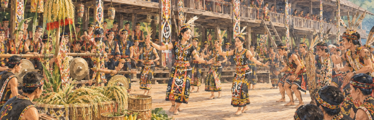

Seni & Arsitektur Tionghoa
Elemen arsitektur klasik seperti kelenteng berpadu dengan fungsionalitas lokal. Menampilkan bagaimana ukiran naga, warna merah simbolik, tungku keramik, dan struktur atap melengkung berasimilasi secara damai di tanah Kalimantan dan pesisir Melayu.
SEJARAH KONGSI & TRADISI KERAMIK
Sejak era pertambangan emas abad ke-18 dan pembentukan sistem kongsi di pesisir Kalimantan Barat, masyarakat Tionghoa berakar harmonis bersama komunitas Dayak dan Melayu.

Visualisasi Sejarah Tionghoa

Penari Menggunakan Pakaian Adat Dayak
Simbolisme Motif & Kehidupan Dayak
Eksplorasi motif tato, ukiran kayu tameng (perisai), dan arsitektur Rumah Betang yang komunal. Menunjukkan ketahanan spiritual tradisi Dayak yang beradaptasi harmonis dengan perkembangan sosial kemasyarakatan modern.
Estetika Melayu & Integrasi Pesisir
Seni pantun, arsitektur rumah panggung pesisir (Istana Kadriyah), serta kehalusan tenun songket Sambas melambangkan keterbukaan budaya Melayu menyambut pengaruh luar dalam naungan kesantunan tradisi.
Atraksi Meriam Bambu